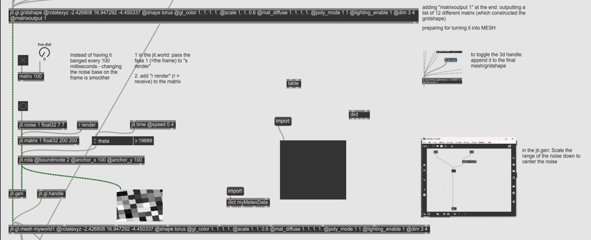

1. Inspiration & Significance
In 2019, I did a realtime VJ performance with a MIDI synthesizer and MAX/MSP. Now I would like to re-grasp some of the technique that I was used to work with. I would like to start from the artist that inspired me during that time, Ryoji Ikeda, and his work Code-Verse
Code-Verse revealed the conplexity of the meta-cosmo filled with tons of information that can be barely recognized by people before it vanishes. Showing respect to the artist and adding some of my personal thoughts onto the original work, I would like to introduce a set of data into the audio-visual performance. The complicated cosmo reminds me of the enormity of the universe. There is too much information gathering in a limited space, which can also be viewed as a tiny little unit.
We're just mayflies amid the universe or an insignificant grain of millet in the boundless sea
2. Diagram:

3. Visual Development
In Ryoji Ikeda's work, the black-and-white plane is flashing while rotating in a 3-dimensional space. Therefore, I decided to generate a 3D world with the "jit.world" object. I also added a camera to control the relative position of the mesh that will be created in the next step, and a "jit.gl.light" to get a bit of reflective effect.
I used "jit.gl.gridshape" to create a geometric shape constructed with a list of 12 different matrices, adjusted its shape, scale, poly mode, line-width, and other attributes.
Adding "matrixoutput 1" to the "jit.gl.gridshape" object can out put the structure of the gridshape as a preperation of the "jit.gl.mesh" object. The mesh object can be added with other matrices information and to generate more effects.
Connecting the gridshape and the mesh with the "jit.gen" object. I aded a noise matrix to the gridshape to give some flashing effect. To make the flashing effect smooth, instead of having the noise flashing randomly, I made the noise rotate each frame.
After patching the effect, I loaded everything in the "jit.gl.mesh" object.
I also made the mesh to be floating in a sin-curve by using the "jit.gl.multiple" and "jit.mo" objects:
4. Audio Development
I want the audio to be simple but create some mesterious digital atmosphere. So I patched a high-pitch audio sequence adding some oscillation and set a low-pass offset to it:
5. Performance
Playing around with the dimension and the line-width can create various changes to the floating mesh. The number of the outlines and the inner connections of the mesh can be adjusted with the "dim" attribute
Line-width can also varied the visual performance. Added with the dimensional change, the visual can be playful:
6. Future Improvement
At first, I was going to utilize the NASA dataset of meteorites to control the rotation of the noise generating the flashing effect of the geometical shape. I collected the information on all of the known meteorites from the NASA dataset of The Meteoritical Society:
I tried to import the dataset in both JSON and .txt file with the "dict" (as "dictionary") object and the "coll" (as "collection") object. I turned to the MAX/MSP documentation and many responses on Reddit and GitHub. It was such a huge dataset that I can hardly import. At the end, I decided to type in and parse some of the data by hand.
At the same time, I think in this project, importing data would not create obvious and creative changes to the visual effect. Therefore, I would like to combine the authentic meanings of the data with other concepts in future works, to generate more solid ideas.